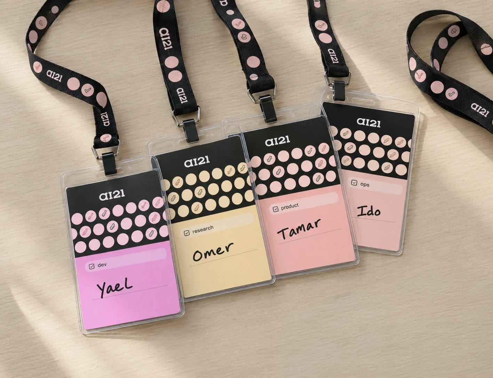
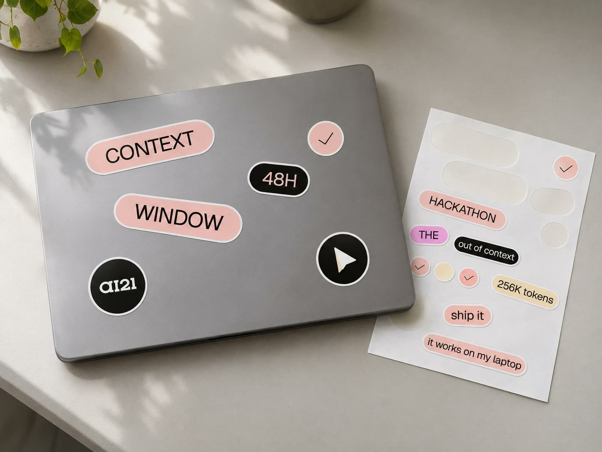

Jamba Hackathon
Video · Landing Page · SwagThe Jamba release hackathon: a video to promote it on LinkedIn, the landing page and the swag.
Visit the landing pageCredits
- DesignAdva Cohen
- Motion DesignAriel Paz
Process


Landing page


Swag




Jamba 1.5
Social AnimationA short social cut for the Jamba 1.5 release, built from the same type and colour system at a faster tempo.